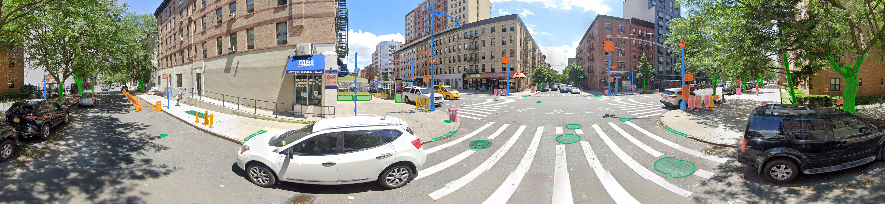
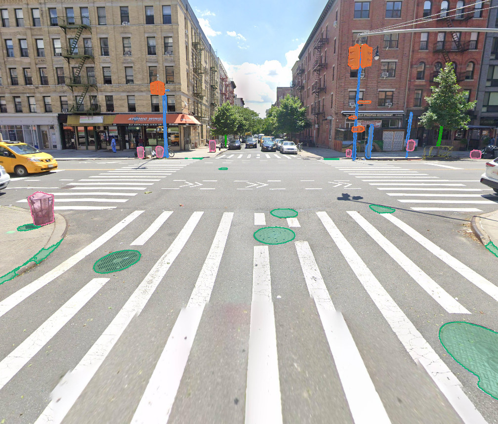
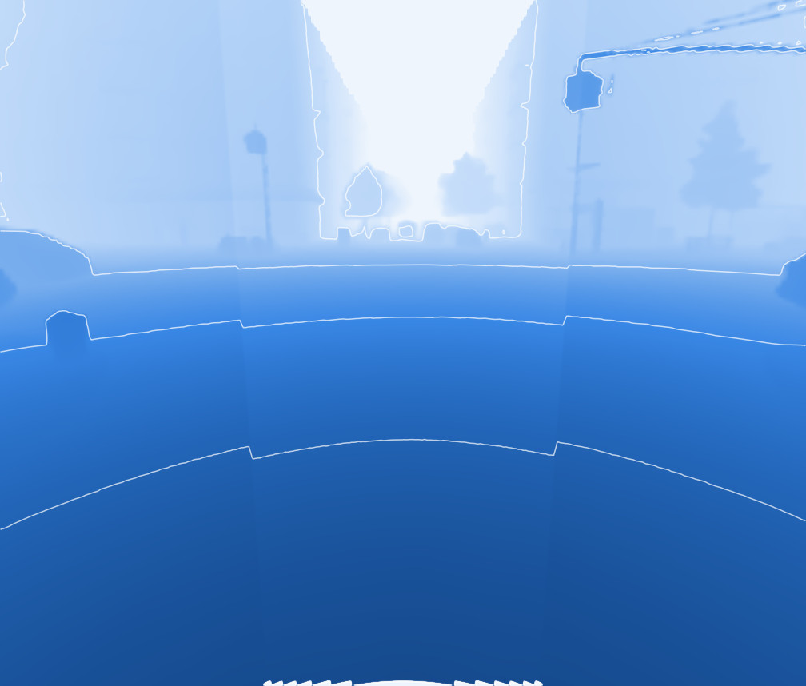

StreetNet detects assets in each panorama and fuses them into one point per asset

Imagery © Google
1
Panorama and views
Each panorama is rendered as four perspective views, 90° wide and pitched 10° down. The highlighted view is shown below.

Imagery © Google2
Segmentation
SAM 3 segments 25 text prompts. Mask2Former adds curb ramps and catch basins.

3
Ground contact and range
MoGe-2 range where each object meets the ground. Contours at 5, 10, 20 and 40 m.

4
Fusion
Observations from neighbouring panoramas are merged into one point per asset.
One panorama in Harlem from the Upper Manhattan pilot study. Top view: its observations (bold) and those of neighbouring panoramas (thin).